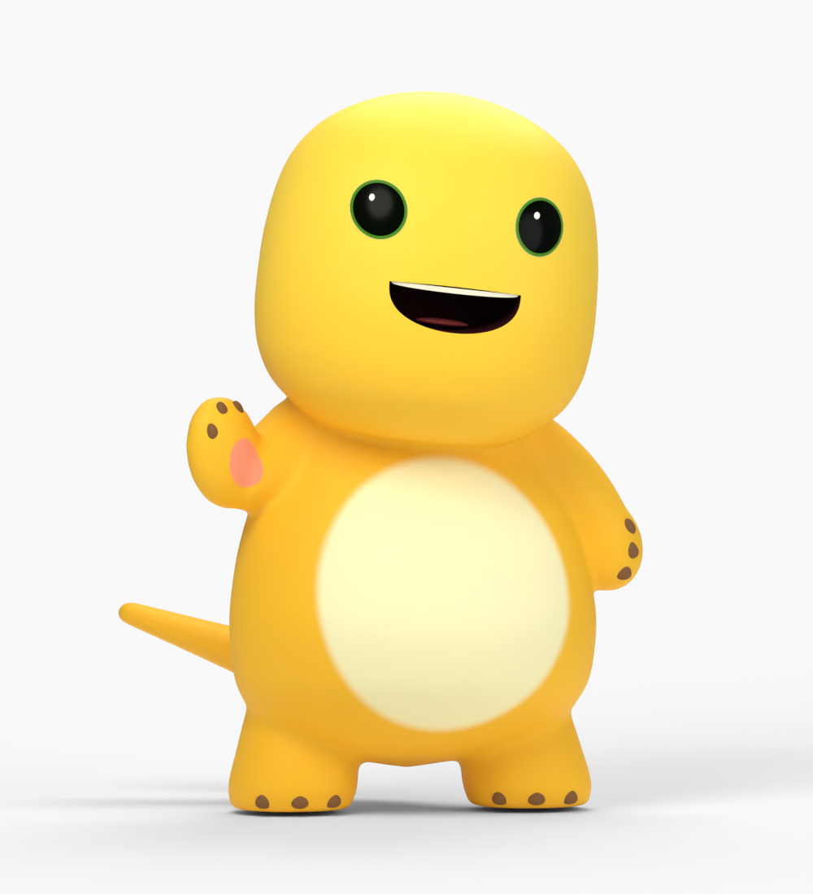
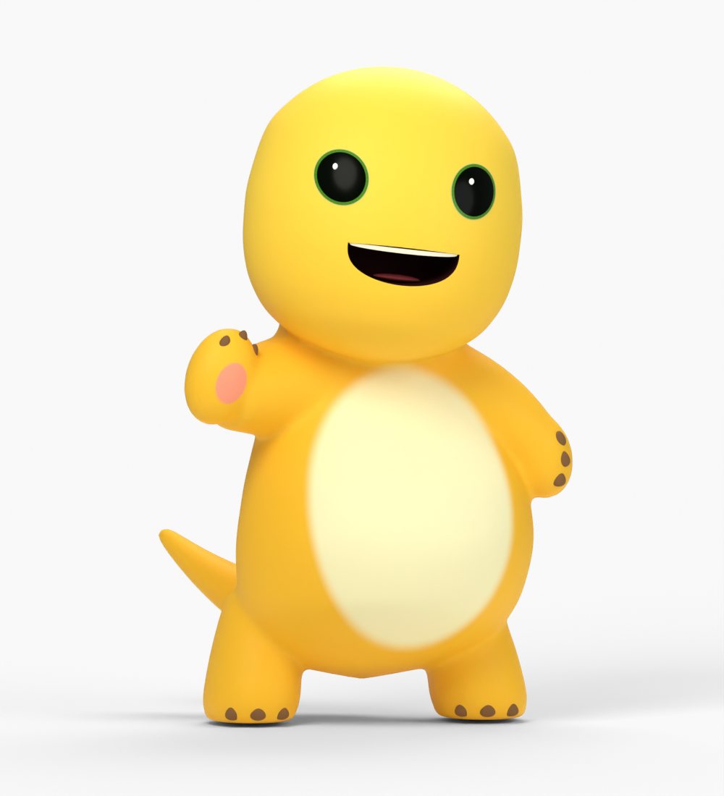
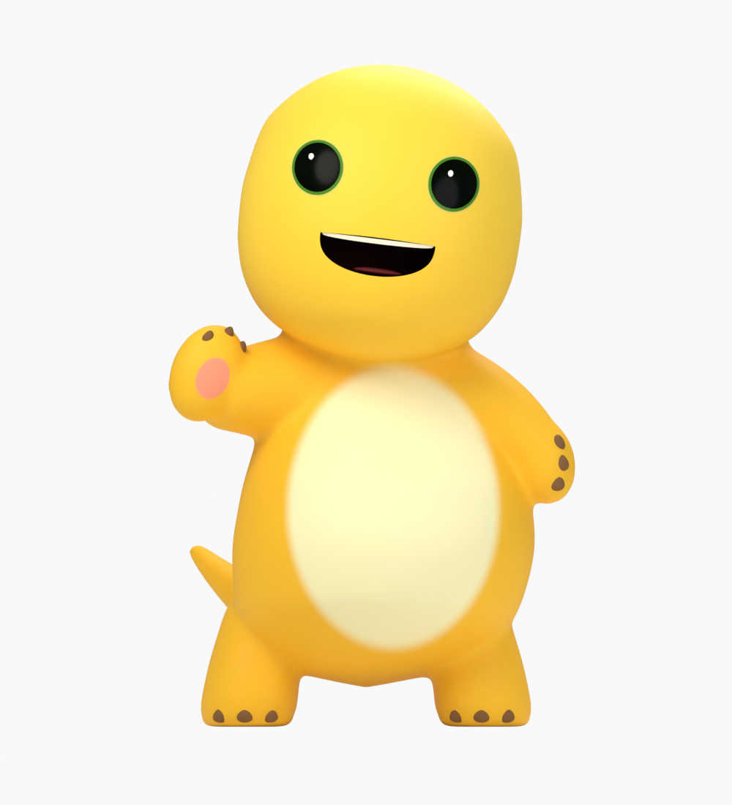
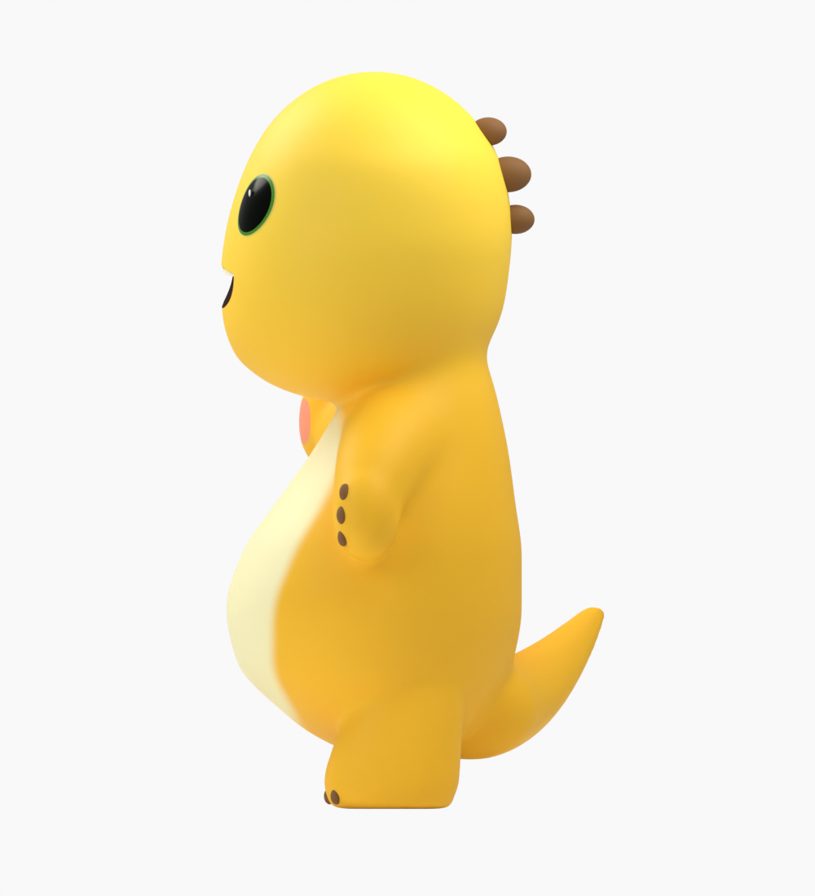
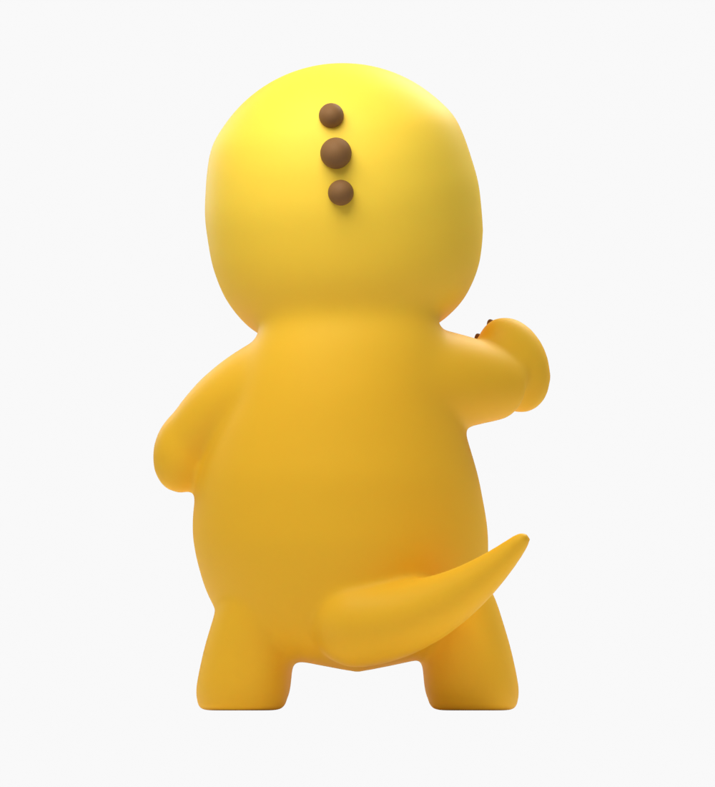

2026-10-29 / BLENDER 原生静态造型
按原照片继续校形 · r9
外观尚未获用户认可 · 没有绑定、动作或生产接入
本轮重做头部下半轮廓、掌面倾斜、脚掌宽度和站距，调整腹部位置与尾巴曲线，并把双臂根部融入躯干。下面全部使用原照片或真实 Blender 渲染，没有生成图片替代三维模型。



仅以 CSS 等比例缩放和平移到近似相同身高。布局采用目视轮廓范围；原图和渲染像素未改动，也没有把对齐结果当作相似度评分。

同一模型的四个视角



目前的判断
- 头部收窄、下巴收短和圆化，眼睛相对头部略大；身躯保持突出腹部，浅色肚皮略偏向照片中的方向。
- 双掌倾斜和站距已重排。r7 的头顶起伏和过弯尾尖、r8 的肩颈夹痕促成了后续修正，早期原生文件和渲染全部保留。
- 仍有差距：举起的手掌仍偏圆，掌面高度、嘴部神态和皮肤质感未完全贴合照片；侧后细节仍是参考不足下的补充设计。当前不标记还原完成。
原生工程在另一个 Blender 4.5.15 LTS 进程中重开并再次渲染：单一身体连通部分、非流形边 0、坐标有限、正体积，骨骼和动作均为 0。这些只证明工程可用。